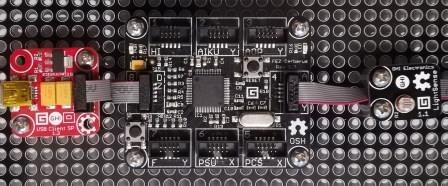

Version: 0.9.0
LightSense is connected as followed on Cerberus:

| LightSense | Mainboard |
|---|---|
| Socket Type A | Socket 4 |
using System.Diagnostics;
using System.Threading;
using Bauland.Gadgeteer;
using GHIElectronics.TinyCLR.Pins;
namespace TestLightSense
{
static class Program
{
static void Main()
{
// LightSense connected on Socket 4 (Type A) of FEZ Cerberus mainboard.
LightSense lightSense = new LightSense(FEZCerberus.AdcChannel.Socket4.Pin3);
while (true)
{
Debug.WriteLine("Light value: " + lightSense.Value + ", ratio: " + lightSense.Ratio.ToString("F1"));
Thread.Sleep(1000);
}
}
}
}